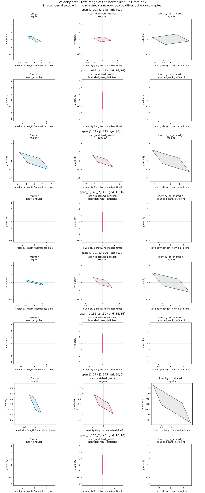

60 retained snapshots · 20 matched physical samples · 3 arms · 1,440 explicit inverse-policy requests.
Instantaneous intrinsic velocity and differential IK on frozen V4.2B snapshots. Unit actuator rates are a comparison convention, not motor ratings. No trajectory, tracking, dynamics, or application claims.
The velocity set is the forward image of
|u̇₁| ≤ 1, |u̇₂| ≤ 1. Directional support measures the largest
projection, while directional ray speed measures motion along the specified
ray. These are retained as separate quantities. Rank-deficient ray values explicitly
identify the inherited-rank model; raw corner images and support remain available.
The three inverse policies are exact, minimum norm with W = I, and
damped least squares with λ = 0.05. Exact inversion at inherited rank loss
is unavailable. Minimum norm projects into the inherited range. Damping introduces
a residual while keeping the physical status unchanged. report_only
retains rate demand; uniform_scale scales the entire command into the
unit budget and records the resulting motion and residual.
Physical status counts:
{'bounded_rank_deficient': 16, 'near_singular': 8, 'regular': 36}.
Budget exceedance is distinct from saturation at exactly one.
An available policy has produced a numerical result. Its achieved velocity and residual show how closely it realizes the requested target.
| Inverse policy | Rate policy | Available | Unavailable | Requested over budget | Commanded over budget | Scaled commands |
|---|---|---|---|---|---|---|
| exact | report_only | 176 | 64 | 141 | 141 | 0 |
| exact | uniform_scale | 176 | 64 | 141 | 0 | 142 |
| minimum_norm | report_only | 240 | 0 | 141 | 141 | 0 |
| minimum_norm | uniform_scale | 240 | 0 | 141 | 0 | 142 |
| damped_least_squares | report_only | 240 | 0 | 117 | 117 | 0 |
| damped_least_squares | uniform_scale | 240 | 0 | 117 | 0 | 117 |
Scaled-command counts include roundoff-sized boundary adjustments; budget exceedance uses the recorded feasibility tolerance.
Regular corner and center samples for each selected case. Each three-arm row uses common equal axes; full-set magnitudes are preserved.
The retained center snapshots classify the fourbar as near-singular and the gearbox and identity controls as rank-deficient. Tiny retained coordinate differences and inherited rank thresholds remain diagnostic; these labels do not establish that a transmission removes the robot singularity.

These tables illustrate all policies on the plotted samples. Every named target and all 60 rows are retained in the downloadable scientific records.
| Arm | Inverse policy | Rate policy | Requested peak | Commanded peak | Scale | Residual norm | Solver / command status |
|---|---|---|---|---|---|---|---|
| fourbar | exact | report_only | 2.93432 | 2.93432 | 1 | 5.84072e-18 | exact / outside_rate_box |
| fourbar | exact | uniform_scale | 2.93432 | 1 | 0.340794 | 0.659206 | exact / uniformly_scaled_to_rate_box |
| fourbar | minimum_norm | report_only | 2.93432 | 2.93432 | 1 | 5.84072e-18 | exact / outside_rate_box |
| fourbar | minimum_norm | uniform_scale | 2.93432 | 1 | 0.340794 | 0.659206 | exact / uniformly_scaled_to_rate_box |
| fourbar | damped_least_squares | report_only | 2.67646 | 2.67646 | 1 | 0.0407118 | regularized / outside_rate_box |
| fourbar | damped_least_squares | uniform_scale | 2.67646 | 1 | 0.373628 | 0.633955 | regularized / uniformly_scaled_to_rate_box |
| span_matched_gearbox | exact | report_only | 1.22754 | 1.22754 | 1 | 1.90942e-17 | exact / outside_rate_box |
| span_matched_gearbox | exact | uniform_scale | 1.22754 | 1 | 0.814637 | 0.185363 | exact / uniformly_scaled_to_rate_box |
| span_matched_gearbox | minimum_norm | report_only | 1.22754 | 1.22754 | 1 | 1.90942e-17 | exact / outside_rate_box |
| span_matched_gearbox | minimum_norm | uniform_scale | 1.22754 | 1 | 0.814637 | 0.185363 | exact / uniformly_scaled_to_rate_box |
| span_matched_gearbox | damped_least_squares | report_only | 1.21424 | 1.21424 | 1 | 0.005466 | regularized / outside_rate_box |
| span_matched_gearbox | damped_least_squares | uniform_scale | 1.21424 | 1 | 0.823563 | 0.179954 | regularized / uniformly_scaled_to_rate_box |
| identity_on_shared_q | exact | report_only | 0.489379 | 0.489379 | 1 | 3.32825e-19 | exact / within_rate_box |
| identity_on_shared_q | exact | uniform_scale | 0.489379 | 0.489379 | 1 | 3.32825e-19 | exact / within_rate_box |
| identity_on_shared_q | minimum_norm | report_only | 0.489379 | 0.489379 | 1 | 3.32825e-19 | exact / within_rate_box |
| identity_on_shared_q | minimum_norm | uniform_scale | 0.489379 | 0.489379 | 1 | 3.32825e-19 | exact / within_rate_box |
| identity_on_shared_q | damped_least_squares | report_only | 0.488896 | 0.488896 | 1 | 0.000751645 | regularized / within_rate_box |
| identity_on_shared_q | damped_least_squares | uniform_scale | 0.488896 | 0.488896 | 1 | 0.000751645 | regularized / within_rate_box |
| Arm | Inverse policy | Rate policy | Requested peak | Commanded peak | Scale | Residual norm | Solver / command status |
|---|---|---|---|---|---|---|---|
| fourbar | exact | report_only | 1.60717e+11 | 1.60717e+11 | 1 | 6.72009e-06 | exact / outside_rate_box |
| fourbar | exact | uniform_scale | 1.60717e+11 | 1 | 6.22212e-12 | 1 | exact / uniformly_scaled_to_rate_box |
| fourbar | minimum_norm | report_only | 1.60717e+11 | 1.60717e+11 | 1 | 6.72009e-06 | exact / outside_rate_box |
| fourbar | minimum_norm | uniform_scale | 1.60717e+11 | 1 | 6.22212e-12 | 1 | exact / uniformly_scaled_to_rate_box |
| fourbar | damped_least_squares | report_only | 1.49076e-09 | 1.49076e-09 | 1 | 1 | regularized / within_rate_box |
| fourbar | damped_least_squares | uniform_scale | 1.49076e-09 | 1.49076e-09 | 1 | 1 | regularized / within_rate_box |
| span_matched_gearbox | exact | report_only | unavailable | unavailable | unavailable | unavailable | transmission_rank_deficient |
| span_matched_gearbox | exact | uniform_scale | unavailable | unavailable | unavailable | unavailable | transmission_rank_deficient |
| span_matched_gearbox | minimum_norm | report_only | 0 | 0 | 1 | 1 | projected / within_rate_box |
| span_matched_gearbox | minimum_norm | uniform_scale | 0 | 0 | 1 | 1 | projected / within_rate_box |
| span_matched_gearbox | damped_least_squares | report_only | 0 | 0 | 1 | 1 | regularized / within_rate_box |
| span_matched_gearbox | damped_least_squares | uniform_scale | 0 | 0 | 1 | 1 | regularized / within_rate_box |
| identity_on_shared_q | exact | report_only | unavailable | unavailable | unavailable | unavailable | transmission_rank_deficient |
| identity_on_shared_q | exact | uniform_scale | unavailable | unavailable | unavailable | unavailable | transmission_rank_deficient |
| identity_on_shared_q | minimum_norm | report_only | 0 | 0 | 1 | 1 | projected / within_rate_box |
| identity_on_shared_q | minimum_norm | uniform_scale | 0 | 0 | 1 | 1 | projected / within_rate_box |
| identity_on_shared_q | damped_least_squares | report_only | 0 | 0 | 1 | 1 | regularized / within_rate_box |
| identity_on_shared_q | damped_least_squares | uniform_scale | 0 | 0 | 1 | 1 | regularized / within_rate_box |
| Arm | Inverse policy | Rate policy | Requested peak | Commanded peak | Scale | Residual norm | Solver / command status |
|---|---|---|---|---|---|---|---|
| fourbar | exact | report_only | 1.07614 | 1.07614 | 1 | 1.11106e-16 | exact / outside_rate_box |
| fourbar | exact | uniform_scale | 1.07614 | 1 | 0.929248 | 0.0707518 | exact / uniformly_scaled_to_rate_box |
| fourbar | minimum_norm | report_only | 1.07614 | 1.07614 | 1 | 1.11106e-16 | exact / outside_rate_box |
| fourbar | minimum_norm | uniform_scale | 1.07614 | 1 | 0.929248 | 0.0707518 | exact / uniformly_scaled_to_rate_box |
| fourbar | damped_least_squares | report_only | 1.06739 | 1.06739 | 1 | 0.00673571 | regularized / outside_rate_box |
| fourbar | damped_least_squares | uniform_scale | 1.06739 | 1 | 0.936869 | 0.0669471 | regularized / uniformly_scaled_to_rate_box |
| span_matched_gearbox | exact | report_only | 1.57586 | 1.57586 | 1 | 7.98654e-18 | exact / outside_rate_box |
| span_matched_gearbox | exact | uniform_scale | 1.57586 | 1 | 0.634573 | 0.365427 | exact / uniformly_scaled_to_rate_box |
| span_matched_gearbox | minimum_norm | report_only | 1.57586 | 1.57586 | 1 | 7.98654e-18 | exact / outside_rate_box |
| span_matched_gearbox | minimum_norm | uniform_scale | 1.57586 | 1 | 0.634573 | 0.365427 | exact / uniformly_scaled_to_rate_box |
| span_matched_gearbox | damped_least_squares | report_only | 1.54882 | 1.54882 | 1 | 0.0141996 | regularized / outside_rate_box |
| span_matched_gearbox | damped_least_squares | uniform_scale | 1.54882 | 1 | 0.645654 | 0.359698 | regularized / uniformly_scaled_to_rate_box |
| identity_on_shared_q | exact | report_only | 0.835601 | 0.835601 | 1 | 1.2866e-16 | exact / within_rate_box |
| identity_on_shared_q | exact | uniform_scale | 0.835601 | 0.835601 | 1 | 1.2866e-16 | exact / within_rate_box |
| identity_on_shared_q | minimum_norm | report_only | 0.835601 | 0.835601 | 1 | 1.2866e-16 | exact / within_rate_box |
| identity_on_shared_q | minimum_norm | uniform_scale | 0.835601 | 0.835601 | 1 | 1.2866e-16 | exact / within_rate_box |
| identity_on_shared_q | damped_least_squares | report_only | 0.831479 | 0.831479 | 1 | 0.00408551 | regularized / within_rate_box |
| identity_on_shared_q | damped_least_squares | uniform_scale | 0.831479 | 0.831479 | 1 | 0.00408551 | regularized / within_rate_box |
| Arm | Inverse policy | Rate policy | Requested peak | Commanded peak | Scale | Residual norm | Solver / command status |
|---|---|---|---|---|---|---|---|
| fourbar | exact | report_only | 1.60717e+11 | 1.60717e+11 | 1 | 2.08075e-06 | exact / outside_rate_box |
| fourbar | exact | uniform_scale | 1.60717e+11 | 1 | 6.22212e-12 | 1 | exact / uniformly_scaled_to_rate_box |
| fourbar | minimum_norm | report_only | 1.60717e+11 | 1.60717e+11 | 1 | 2.08075e-06 | exact / outside_rate_box |
| fourbar | minimum_norm | uniform_scale | 1.60717e+11 | 1 | 6.22212e-12 | 1 | exact / uniformly_scaled_to_rate_box |
| fourbar | damped_least_squares | report_only | 1.99725e-09 | 1.99725e-09 | 1 | 1 | regularized / within_rate_box |
| fourbar | damped_least_squares | uniform_scale | 1.99725e-09 | 1.99725e-09 | 1 | 1 | regularized / within_rate_box |
| span_matched_gearbox | exact | report_only | unavailable | unavailable | unavailable | unavailable | transmission_rank_deficient |
| span_matched_gearbox | exact | uniform_scale | unavailable | unavailable | unavailable | unavailable | transmission_rank_deficient |
| span_matched_gearbox | minimum_norm | report_only | 0 | 0 | 1 | 1 | projected / within_rate_box |
| span_matched_gearbox | minimum_norm | uniform_scale | 0 | 0 | 1 | 1 | projected / within_rate_box |
| span_matched_gearbox | damped_least_squares | report_only | 0 | 0 | 1 | 1 | regularized / within_rate_box |
| span_matched_gearbox | damped_least_squares | uniform_scale | 0 | 0 | 1 | 1 | regularized / within_rate_box |
| identity_on_shared_q | exact | report_only | unavailable | unavailable | unavailable | unavailable | transmission_rank_deficient |
| identity_on_shared_q | exact | uniform_scale | unavailable | unavailable | unavailable | unavailable | transmission_rank_deficient |
| identity_on_shared_q | minimum_norm | report_only | 0 | 0 | 1 | 1 | projected / within_rate_box |
| identity_on_shared_q | minimum_norm | uniform_scale | 0 | 0 | 1 | 1 | projected / within_rate_box |
| identity_on_shared_q | damped_least_squares | report_only | 0 | 0 | 1 | 1 | regularized / within_rate_box |
| identity_on_shared_q | damped_least_squares | uniform_scale | 0 | 0 | 1 | 1 | regularized / within_rate_box |
| Arm | Inverse policy | Rate policy | Requested peak | Commanded peak | Scale | Residual norm | Solver / command status |
|---|---|---|---|---|---|---|---|
| fourbar | exact | report_only | 3.28426 | 3.28426 | 1 | 1.77255e-17 | exact / outside_rate_box |
| fourbar | exact | uniform_scale | 3.28426 | 1 | 0.304483 | 0.695517 | exact / uniformly_scaled_to_rate_box |
| fourbar | minimum_norm | report_only | 3.28426 | 3.28426 | 1 | 1.77255e-17 | exact / outside_rate_box |
| fourbar | minimum_norm | uniform_scale | 3.28426 | 1 | 0.304483 | 0.695517 | exact / uniformly_scaled_to_rate_box |
| fourbar | damped_least_squares | report_only | 2.1012 | 2.1012 | 1 | 0.080838 | regularized / outside_rate_box |
| fourbar | damped_least_squares | uniform_scale | 2.1012 | 1 | 0.47592 | 0.535333 | regularized / uniformly_scaled_to_rate_box |
| span_matched_gearbox | exact | report_only | 1.63407 | 1.63407 | 1 | 2.28012e-16 | exact / outside_rate_box |
| span_matched_gearbox | exact | uniform_scale | 1.63407 | 1 | 0.611967 | 0.388033 | exact / uniformly_scaled_to_rate_box |
| span_matched_gearbox | minimum_norm | report_only | 1.63407 | 1.63407 | 1 | 2.28012e-16 | exact / outside_rate_box |
| span_matched_gearbox | minimum_norm | uniform_scale | 1.63407 | 1 | 0.611967 | 0.388033 | exact / uniformly_scaled_to_rate_box |
| span_matched_gearbox | damped_least_squares | report_only | 1.60748 | 1.60748 | 1 | 0.0127434 | regularized / outside_rate_box |
| span_matched_gearbox | damped_least_squares | uniform_scale | 1.60748 | 1 | 0.62209 | 0.382712 | regularized / uniformly_scaled_to_rate_box |
| identity_on_shared_q | exact | report_only | 0.795683 | 0.795683 | 1 | 1.87457e-17 | exact / within_rate_box |
| identity_on_shared_q | exact | uniform_scale | 0.795683 | 0.795683 | 1 | 1.87457e-17 | exact / within_rate_box |
| identity_on_shared_q | minimum_norm | report_only | 0.795683 | 0.795683 | 1 | 1.87457e-17 | exact / within_rate_box |
| identity_on_shared_q | minimum_norm | uniform_scale | 0.795683 | 0.795683 | 1 | 1.87457e-17 | exact / within_rate_box |
| identity_on_shared_q | damped_least_squares | report_only | 0.792244 | 0.792244 | 1 | 0.00342554 | regularized / within_rate_box |
| identity_on_shared_q | damped_least_squares | uniform_scale | 0.792244 | 0.792244 | 1 | 0.00342554 | regularized / within_rate_box |
| Arm | Inverse policy | Rate policy | Requested peak | Commanded peak | Scale | Residual norm | Solver / command status |
|---|---|---|---|---|---|---|---|
| fourbar | exact | report_only | 8.7556e+10 | 8.7556e+10 | 1 | 4.72457e-06 | exact / outside_rate_box |
| fourbar | exact | uniform_scale | 8.7556e+10 | 1 | 1.14213e-11 | 1 | exact / uniformly_scaled_to_rate_box |
| fourbar | minimum_norm | report_only | 8.7556e+10 | 8.7556e+10 | 1 | 4.72457e-06 | exact / outside_rate_box |
| fourbar | minimum_norm | uniform_scale | 8.7556e+10 | 1 | 1.14213e-11 | 1 | exact / uniformly_scaled_to_rate_box |
| fourbar | damped_least_squares | report_only | 3.29145e-09 | 3.29145e-09 | 1 | 1 | regularized / within_rate_box |
| fourbar | damped_least_squares | uniform_scale | 3.29145e-09 | 3.29145e-09 | 1 | 1 | regularized / within_rate_box |
| span_matched_gearbox | exact | report_only | unavailable | unavailable | unavailable | unavailable | transmission_rank_deficient |
| span_matched_gearbox | exact | uniform_scale | unavailable | unavailable | unavailable | unavailable | transmission_rank_deficient |
| span_matched_gearbox | minimum_norm | report_only | 1.71696e-16 | 1.71696e-16 | 1 | 1 | projected / within_rate_box |
| span_matched_gearbox | minimum_norm | uniform_scale | 1.71696e-16 | 1.71696e-16 | 1 | 1 | projected / within_rate_box |
| span_matched_gearbox | damped_least_squares | report_only | 1.48892e-14 | 1.48892e-14 | 1 | 1 | regularized / within_rate_box |
| span_matched_gearbox | damped_least_squares | uniform_scale | 1.48892e-14 | 1.48892e-14 | 1 | 1 | regularized / within_rate_box |
| identity_on_shared_q | exact | report_only | unavailable | unavailable | unavailable | unavailable | transmission_rank_deficient |
| identity_on_shared_q | exact | uniform_scale | unavailable | unavailable | unavailable | unavailable | transmission_rank_deficient |
| identity_on_shared_q | minimum_norm | report_only | 0 | 0 | 1 | 1 | projected / within_rate_box |
| identity_on_shared_q | minimum_norm | uniform_scale | 0 | 0 | 1 | 1 | projected / within_rate_box |
| identity_on_shared_q | damped_least_squares | report_only | 7.10543e-14 | 7.10543e-14 | 1 | 1 | regularized / within_rate_box |
| identity_on_shared_q | damped_least_squares | uniform_scale | 7.10543e-14 | 7.10543e-14 | 1 | 1 | regularized / within_rate_box |
| Arm | Inverse policy | Rate policy | Requested peak | Commanded peak | Scale | Residual norm | Solver / command status |
|---|---|---|---|---|---|---|---|
| fourbar | exact | report_only | 4.93267 | 4.93267 | 1 | 2.69464e-16 | exact / outside_rate_box |
| fourbar | exact | uniform_scale | 4.93267 | 1 | 0.20273 | 0.79727 | exact / uniformly_scaled_to_rate_box |
| fourbar | minimum_norm | report_only | 4.93267 | 4.93267 | 1 | 2.69464e-16 | exact / outside_rate_box |
| fourbar | minimum_norm | uniform_scale | 4.93267 | 1 | 0.20273 | 0.79727 | exact / uniformly_scaled_to_rate_box |
| fourbar | damped_least_squares | report_only | 4.57832 | 4.57832 | 1 | 0.0661198 | regularized / outside_rate_box |
| fourbar | damped_least_squares | uniform_scale | 4.57832 | 1 | 0.218421 | 0.79458 | regularized / uniformly_scaled_to_rate_box |
| span_matched_gearbox | exact | report_only | 1.95322 | 1.95322 | 1 | 1.46858e-17 | exact / outside_rate_box |
| span_matched_gearbox | exact | uniform_scale | 1.95322 | 1 | 0.511976 | 0.488024 | exact / uniformly_scaled_to_rate_box |
| span_matched_gearbox | minimum_norm | report_only | 1.95322 | 1.95322 | 1 | 1.46858e-17 | exact / outside_rate_box |
| span_matched_gearbox | minimum_norm | uniform_scale | 1.95322 | 1 | 0.511976 | 0.488024 | exact / uniformly_scaled_to_rate_box |
| span_matched_gearbox | damped_least_squares | report_only | 1.90906 | 1.90906 | 1 | 0.0221287 | regularized / outside_rate_box |
| span_matched_gearbox | damped_least_squares | uniform_scale | 1.90906 | 1 | 0.523817 | 0.484686 | regularized / uniformly_scaled_to_rate_box |
| identity_on_shared_q | exact | report_only | 0.971497 | 0.971497 | 1 | 8.08091e-17 | exact / within_rate_box |
| identity_on_shared_q | exact | uniform_scale | 0.971497 | 0.971497 | 1 | 8.08091e-17 | exact / within_rate_box |
| identity_on_shared_q | minimum_norm | report_only | 0.971497 | 0.971497 | 1 | 8.08091e-17 | exact / within_rate_box |
| identity_on_shared_q | minimum_norm | uniform_scale | 0.971497 | 0.971497 | 1 | 8.08091e-17 | exact / within_rate_box |
| identity_on_shared_q | damped_least_squares | report_only | 0.965541 | 0.965541 | 1 | 0.00605149 | regularized / within_rate_box |
| identity_on_shared_q | damped_least_squares | uniform_scale | 0.965541 | 0.965541 | 1 | 0.00605149 | regularized / within_rate_box |
| Arm | Inverse policy | Rate policy | Requested peak | Commanded peak | Scale | Residual norm | Solver / command status |
|---|---|---|---|---|---|---|---|
| fourbar | exact | report_only | 1.60717e+11 | 1.60717e+11 | 1 | 5.66615e-06 | exact / outside_rate_box |
| fourbar | exact | uniform_scale | 1.60717e+11 | 1 | 6.22212e-12 | 1 | exact / uniformly_scaled_to_rate_box |
| fourbar | minimum_norm | report_only | 1.60717e+11 | 1.60717e+11 | 1 | 5.66615e-06 | exact / outside_rate_box |
| fourbar | minimum_norm | uniform_scale | 1.60717e+11 | 1 | 6.22212e-12 | 1 | exact / uniformly_scaled_to_rate_box |
| fourbar | damped_least_squares | report_only | 1.83749e-09 | 1.83749e-09 | 1 | 1 | regularized / within_rate_box |
| fourbar | damped_least_squares | uniform_scale | 1.83749e-09 | 1.83749e-09 | 1 | 1 | regularized / within_rate_box |
| span_matched_gearbox | exact | report_only | unavailable | unavailable | unavailable | unavailable | transmission_rank_deficient |
| span_matched_gearbox | exact | uniform_scale | unavailable | unavailable | unavailable | unavailable | transmission_rank_deficient |
| span_matched_gearbox | minimum_norm | report_only | 0 | 0 | 1 | 1 | projected / within_rate_box |
| span_matched_gearbox | minimum_norm | uniform_scale | 0 | 0 | 1 | 1 | projected / within_rate_box |
| span_matched_gearbox | damped_least_squares | report_only | 5.50126e-14 | 5.50126e-14 | 1 | 1 | regularized / within_rate_box |
| span_matched_gearbox | damped_least_squares | uniform_scale | 5.50126e-14 | 5.50126e-14 | 1 | 1 | regularized / within_rate_box |
| identity_on_shared_q | exact | report_only | unavailable | unavailable | unavailable | unavailable | transmission_rank_deficient |
| identity_on_shared_q | exact | uniform_scale | unavailable | unavailable | unavailable | unavailable | transmission_rank_deficient |
| identity_on_shared_q | minimum_norm | report_only | 8.88178e-17 | 8.88178e-17 | 1 | 1 | projected / within_rate_box |
| identity_on_shared_q | minimum_norm | uniform_scale | 8.88178e-17 | 8.88178e-17 | 1 | 1 | projected / within_rate_box |
| identity_on_shared_q | damped_least_squares | report_only | 8.87735e-17 | 8.87735e-17 | 1 | 1 | regularized / within_rate_box |
| identity_on_shared_q | damped_least_squares | uniform_scale | 8.87735e-17 | 8.87735e-17 | 1 | 1 | regularized / within_rate_box |